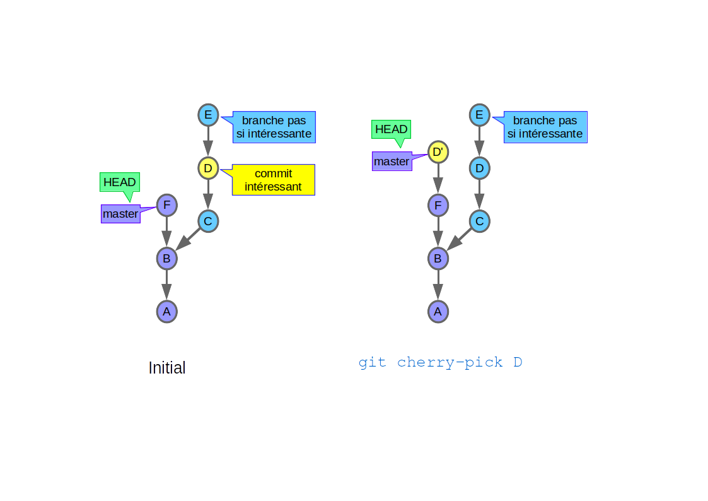
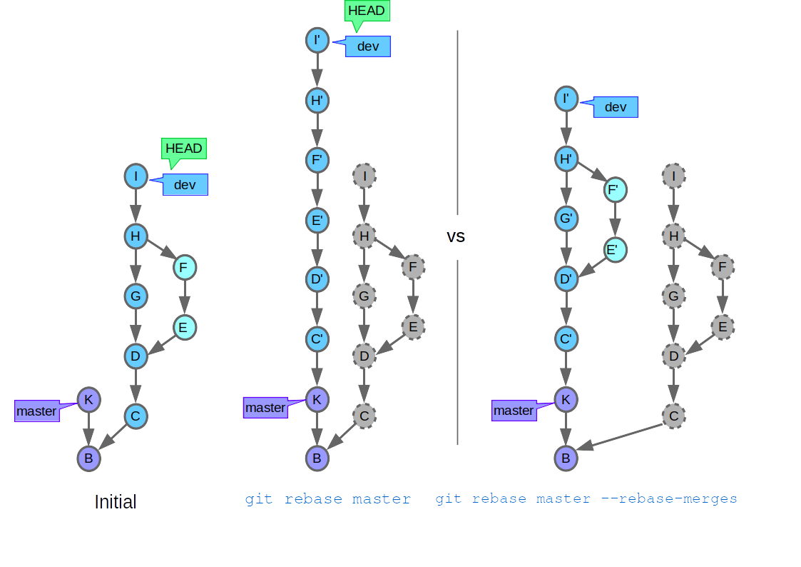
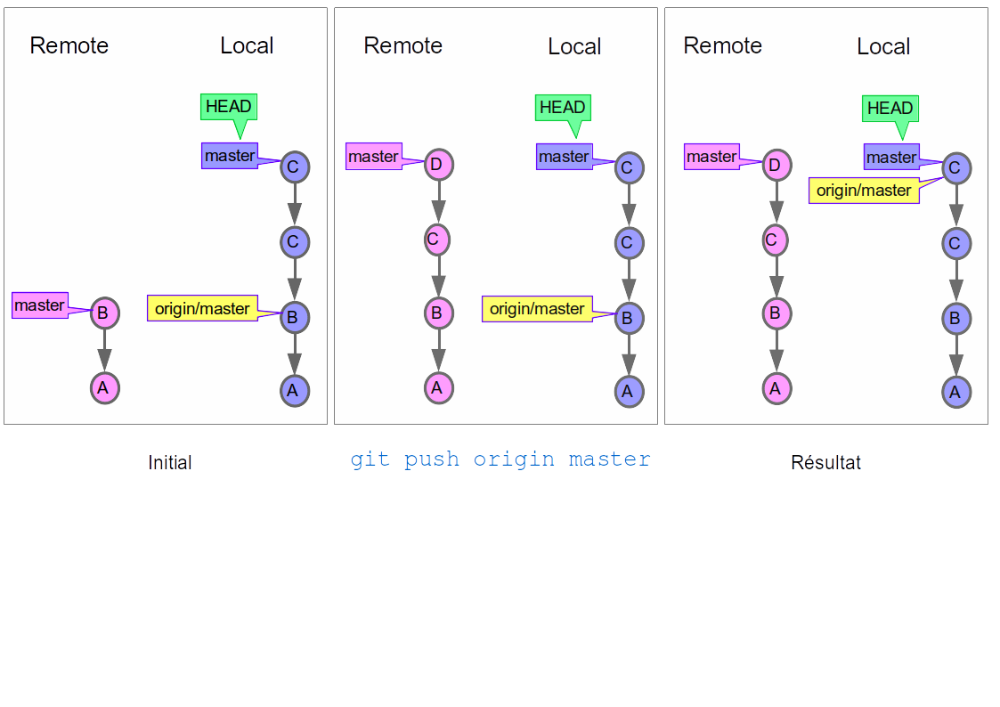
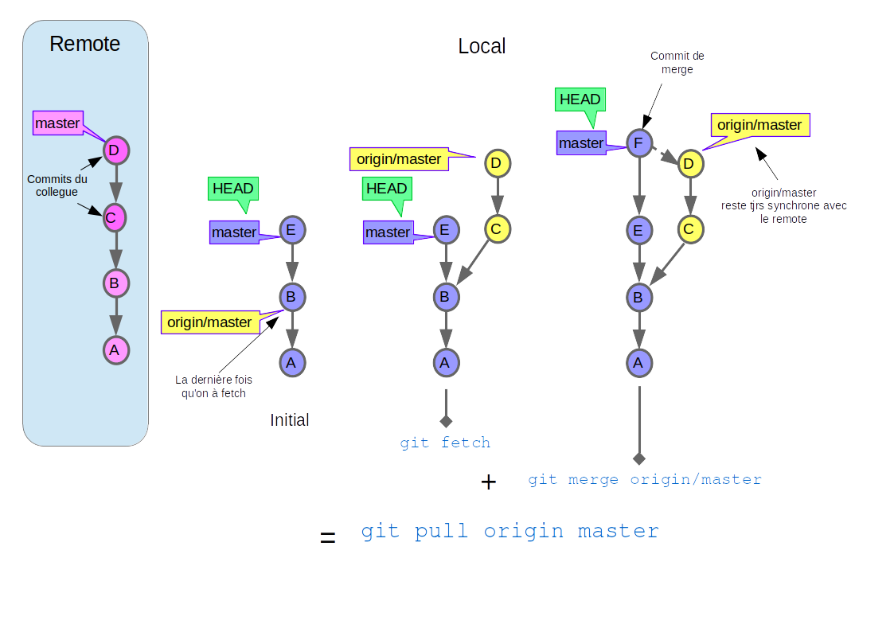
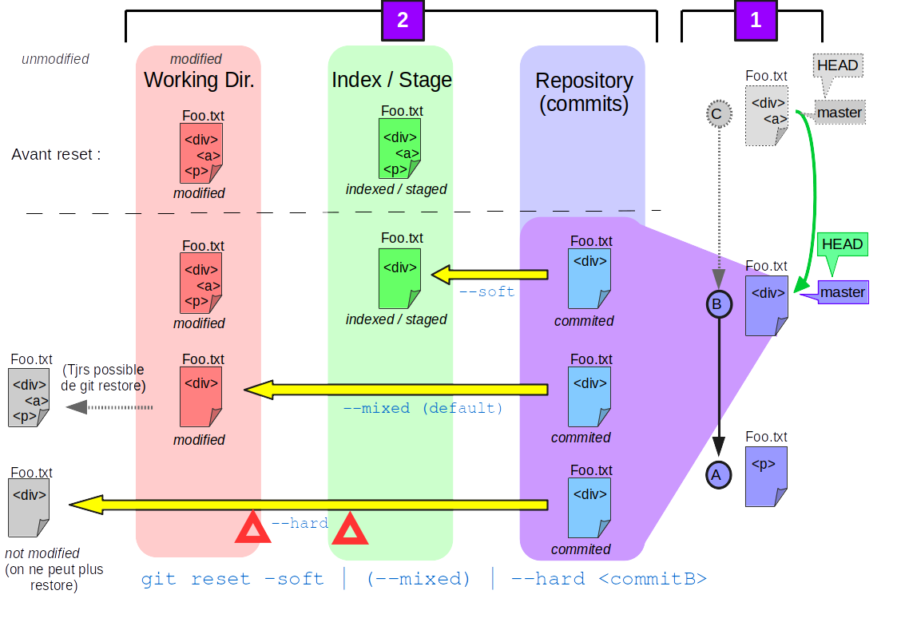
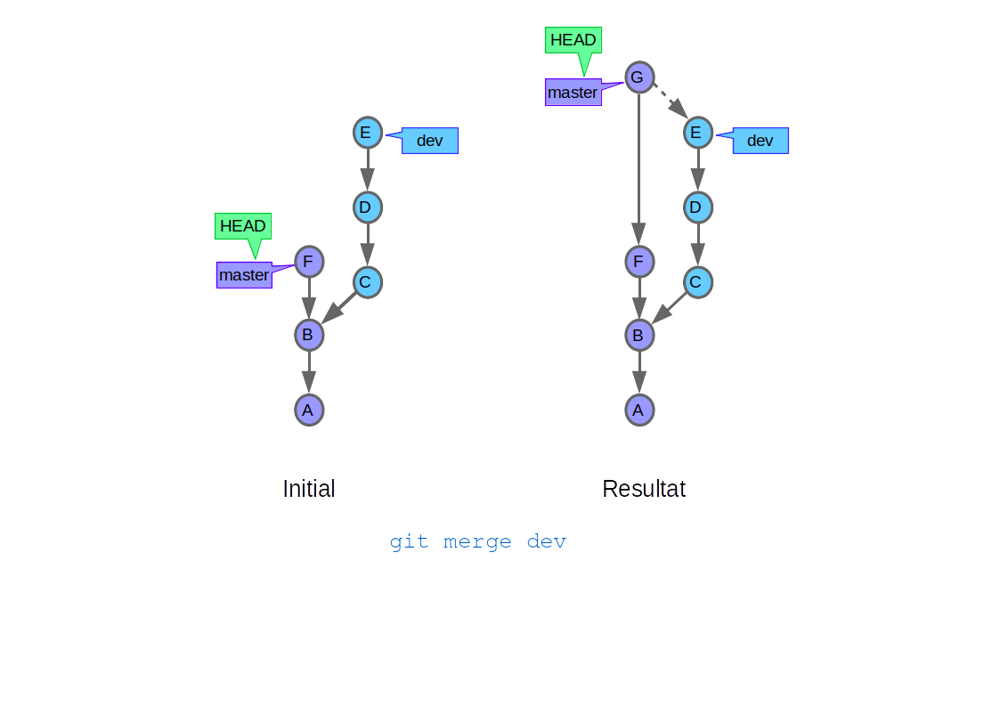
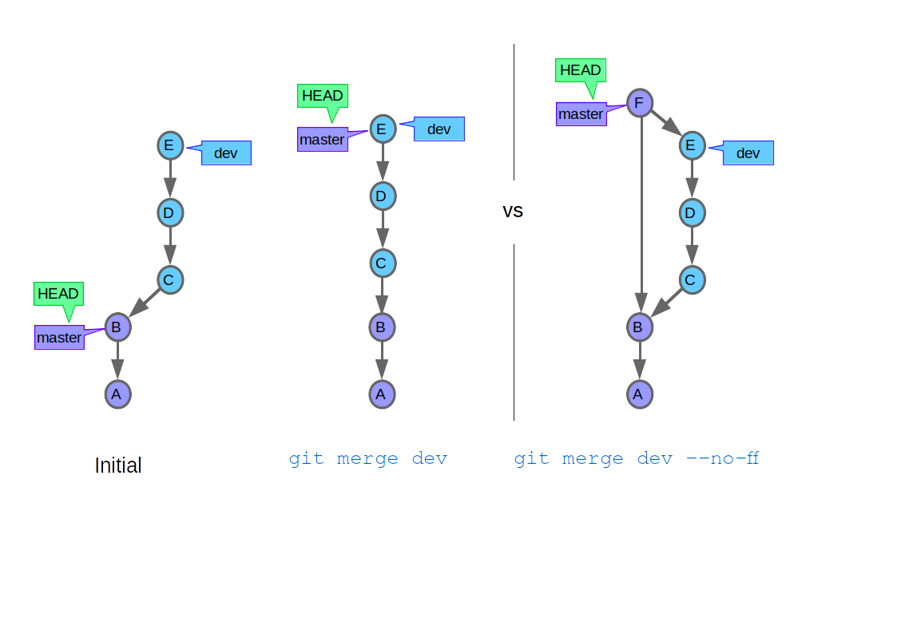

<!doctype html>
<html lang="fr">

<head>
    <meta charset="utf-8">

    <title>Formation Git</title>
    <meta name="author" content="Mikael Brosset">
    <link href='./favicon.ico' rel='shortcut icon' type='image/x-icon'>

    <meta name="apple-mobile-web-app-capable" content="yes">
    <meta name="apple-mobile-web-app-status-bar-style" content="black-translucent">

    <meta name="viewport" content="width=device-width, initial-scale=1.0, maximum-scale=1.0, user-scalable=no, minimal-ui">

    <link href='https://fonts.googleapis.com/css?family=Merriweather:700|Source+Sans+Pro:300,600,300italic,600italic|Source+Code+Pro:400,600' rel='stylesheet' type='text/css'>
    <link rel="stylesheet" href="css/reveal.css">
    <link rel="stylesheet" href="css/theme/sky.css" id="theme-basis">
    <link rel="stylesheet" href="css/theme/git-total.css" id="theme">
    <link rel="stylesheet" href="css/d3-git.css">

    <!-- Code syntax highlighting -->
    <link rel="stylesheet" href="lib/css/prism.css">

    <!-- Printing and PDF exports -->
    <script>
        var link = document.createElement( 'link' );
        link.rel = 'stylesheet';
        link.type = 'text/css';
        link.href = window.location.search.match( /print-pdf/gi ) ? 'css/print/pdf.css' : 'css/print/paper.css';
        document.getElementsByTagName( 'head' )[0].appendChild( link );
    </script>

    <!--[if lt IE 9]>
    <script src="lib/js/html5shiv.js"></script>
    <![endif]-->
</head>

<body>

<div class="reveal">
    <div class="slides">
        <section id="intro" data-background-image="images/git.svg" data-background-size="30%">
            <h1>Git</h1>
            <h3>Formation</h3>
            <p><small>Mikael Brosset</small></p>
        </section>

        <!--!!!!!!!!!!! SLIDES ------------->
        <section>
            <h2>Slides</h2>
            <p><a href="https://github.com/mikaelBrosset/GIT_TRAINING">https://github.com/mikaelBrosset/GIT_TRAINING</a></p>
            <footer>
                <a href="https://git-scm.com/docs"><code>git commands list /</code></a>
                <a href="http://ndpsoftware.com/git-cheatsheet.html"><code>git-cheatsheet</code></a>
            </footer>
        </section>

        <!--!!!!!!!!!!! WHY ------------->
        <section id="why">
            <ul style="margin-bottom: 0px !important">
                <h2>But de cette présentation</h2>
                <li>Pouvoir se déplacer de commit en commit</li>
                <li>Pouvoir revenir en arrière si on s'est trompé</li>
                <li>Comprendre l'intéret des commits atomiques et des branches propres</li>
                <li>Comprendre les concepts indispensables</li><br>

                <h2>Pourquoi apprendre Git ?</h2>
                <li>Pour travailler à plusieurs sur un même projet</li>
                <li>Pour pouvoir revenir en arrière si on s'est trompé</li>
                <li>Parce qu'on s'en sert pour tous les langages et on peut s'en servir pour nimporte quel fichier</li>
                <li>Parce que c'est léger</li><br>

                <h2>Les difficultés de Git ?</h2>
                <li>Les options innombrables pour les différentes commandes.</li>
                <li>Le nommage parfois hasardeux (autosquash, checkout, ...) avec des commandes qui se ressemblent</li>
                <li>La difficulté d'avoir une vision d'ensemble</li>
            </ul>
        </section>

        <!--!!!!!!!!!!! BASICS ------------->
        <section id="basics">
        <section data-background-image="images/concepts-generiques.png" data-background-size="100%">
            <h1 class="translucent">Concepts fondamentaux</h1>
        </section>

            <section>
                <h2>La gestion de version</h2>
                <div>
                    <ul>
                        <li><strong>Git</strong> : depuis 2005, créé par Linus Torvald pour le noyau Linux (en remplacement de BitKeeper)
                            <ul class="subul">
                                <li class="subli">Autres systèmes existants : CVS, ClearCase, SVN, Mercurial, ...</li>
                            </ul>
                        </li>
                        <li>Git: système <strong>décentralisé</strong> :
                            <ul class="subul">
                                <li class="subli">pas de serveur critique</li>
                                <li class="subli">possiblilité de travailler en local, et de faire des "brouillons"</li>
                                <li class="subli">pas besoin de connection internet ni de droits pour travailler</li>
                            </ul>
                        </li>
                        
                    </ul>
                </div>
            </section>

            <section>
                <h2>Les données sous forme de Tree</h2>
                
            </section>

            <section>
                <h2>2 types de commandes dans Git:</h2>
                <ul>
                    <li><strong>Porcelaine</strong> (~38/40 commandes), les commandes principales</li>
                    <li><strong>Plomberie</strong>, les commandes bas niveau</li>
                </ul>
            </section>
            <section>
                <h2>Memento des notions</h2>
                <table id="generics" class="tableGenerics">
                    <tbody>
                    <tr>
                        <td><strong>Commit</strong></td>
                        <td>Série de modifications uniques (blob), idéalement thématique et atomique (cohérent).<br>
                            Possède un <strong>identifiant unique</strong> (Sha1).
                        </td>
                    </tr>
                    <tr>
                        <td><strong>HEAD</strong></td>
                        <td>
                            <strong>Étiquette</strong> du dernier commit en date dans l’historique de référence actuel d’où partira les prochains commit.<br>
                            Sert de référence aux commandes de type git status, git show…<br>
                        </td>
                    </tr>
                    <tr>
                        <td><strong>Branche</strong></td>
                        <td><strong>Étiquette</strong> représentant un historique de commits (série de commits). Un même dépôt peut avoir plein de branches, comme un arbre.</td>
                    </tr>
                    <tr>
                        <td><strong>Master / Main</strong></td>
                        <td>La branche de référence d’un dépôt</td>
                    </tr>
                    <tr>
                        <td><strong>Fusion / Merge</strong></td>
                        <td>Réconciliation des travaux de plusieurs branches pour un résultat consolidé.</td>
                    </tr>
                    <tr>
                        <td><strong>Dépôt / Repository</strong></td>
                        <td>Ensemble de commits pour un même projet, local ou distant (sur un serveur), avec les méta-données associées.</td>
                    </tr>
                    <tr>
                        <td><strong>La branche de Fetch / cachée</strong></td>
                        <td><strong>Branche spéciale cachée !</strong>. Elle est synchronisée avec la branche du dépot distant au moyen de <code>git fetch</code>.</td>
                    </tr>
                    <tr>
                        <td><strong>Tag / Label</strong></td>
                        <td><strong>Étiquette</strong> sémantique apposée sur un commit (ex. « v1.0 »). Un tag n’est pas censé être repositionné après coup.</td>
                    </tr>
                    <tr>
                        <td><strong>Révision (étiquette / identifiant)</strong></td>
                        <td><strong>c'est piégeux</strong> car c'est un commit OU une branche OU HEAD OU un tag dans bcp de tutos<br>
                            En gros: une étiquette ou un identifiant unique de référence
                        </td>
                    </tr>
                    <tr>
                        <td><strong>Conflit</strong></td>
                        <td>Situation empêchant une fusion automatique. Se résout manuellement (l'algo de Git n'a pas réussi)</td>
                    </tr>
                    <tr>
                        <td><strong>Working Directory</strong></td>
                        <td>L’état actuel sur le disque des dossiers et fichiers</td>
                    </tr>
                    <tr>
                        <td><strong>le Stage / l'Index</strong></td>
                        <td>La "salle d'attente" des modifications qui vont être commitées</td>
                    </tr>
                    </tbody>
                </table>
            </section>

            <!----------- ZONES ------------->
            <section>
                <h2>Les Zones / Cycle de vie du fichier</h2>
                
            </section>

        </section>

        <!--!!!!!!!!!!! WORKFLOW D UN DEPOT ------------->
        <section>
            <section data-background-image="images/depot.jpg" data-background-size="114%">
                <h1 class="translucent">Workflow d'un dépôt</h1>
            </section>
            <!----------- GIT INIT ------------->

            <section>
                <h2>Création:</h2><br>
                <p>Pour créer le dossier <code>.git</code></p>
                <h4>Soit init...</h4>
                <pre><code data-keep-tags="strong" class="language-bash"><span class="cyan">git init</span> #…quand on est les initiateurs du dépôt.</code></pre>

                <h4>Soit clone</h4>
                <p>via plusieurs protocoles (ssh, http(s), ftp(s), filesystem, git (<em>un daemon livré avec git, le plus rapide de tous</em>))</p>
                <pre><code data-keep-tags="strong" class="language-bash">#git clone …quand on récupère un dépôt distant existant.
                    </code><code data-keep-tags="strong" class="language-bash"><span class="cyan">git clone git@github.com:tdd/yolo.git</span>
                    </code><code data-keep-tags="strong" class="language-bash"><span class="cyan">git clone git://github.com:project/project1.git</span>
                    </code><code data-keep-tags="strong" class="language-bash"><span class="cyan">git clone https://git.lolcatz.com/git/cat.git</span></code></pre>
                <footer><a href="https://git-scm.com/book/fr/v2/Git-sur-le-serveur-Protocoles"><code>git protocoles</code></a></footer>
            </section>

            <!----------- GIT STATUS ------------->
            <section>
                <h2>git status</h2>
                <p>le réflexe immédiat pour voir ce qu'il se passe avant un commit ou suite à un conflit</p>
                    <p>Permet de voir immédiatement :</p>
                    <ul>
                        <li>Les fichiers non versionnés (<code>untracked</code>)</li>
                        <li>Les fichiers modifiés (<code>changes not staged for commit</code>)</li>
                        <li>Les modifs validées (<code>changes to be committed</code>)</li>
                        <li>Certains cas spéciaux (ex. <code>both modified</code> : conflits de fusion…)</li>
                    </ul>
                        <pre><code data-keep-tags="strong" class="language-bash"><span>git status</span>
                        </code><code data-keep-tags="strong" class="language-bash"><span>git status -s </span>#version small</code></pre>
            </section>

            <!----------- GIT ADD ------------->
            <section>
                <h2>git add</h2>
                <p>ajouter les modifs du Working Dir vers le Stage / l'Index</p>

                <pre><code data-keep-tags="strong" class="language-bash"><span class="cyan">git add &lt;filename&gt; [&lt;filename&gt;]</span> #ajouter 1 ou plusieurs fichiers dans le Stage
                </code><code data-keep-tags="strong" class="language-bash"><span class="cyan">git add .</span> #absolument tout (< 2.0 : sauf les suppressions !). A éviter.
                </code><code data-keep-tags="strong" class="language-bash"><span class="cyan">git add -A</span> #absolument tout (< 2.0 : sauf les suppressions !). A éviter.
                </code><code data-keep-tags="strong" class="language-bash"><span class="cyan">git add -u</span> #tous les fichiers connus (modifs / suppressions), pas les untracked
                </code><code data-keep-tags="strong" class="language-bash"><span class="cyan">git add -p [&lt;filename&gt;]</span> #SUPER UTILE ! seulement certaines modifs du fichier (--patch)
                </code><code data-keep-tags="strong" class="language-bash"><span class="cyan">git add -f &lt;filename&gt; </span> #si le chemin est dans le .gitignore (--force)
                </code><code data-keep-tags="strong" class="language-bash"><span class="cyan">git add -i</span> #mode interactif un peu naze</code></pre>

            </section>

            <!----------- GIT COMMIT ------------->
            <section>
                <h2>git commit</h2>
                <p>créer le snapshot / commit dans le dépot local en fonction de ce qui à été staged</p>

                <pre><code data-keep-tags="strong" class="language-bash"><span>git commit</span> #ouvre l'éditeur par défaut pour le message de commit
                </code><code data-keep-tags="strong" class="language-bash"><span>git commit -m "message"</span> #message mono-ligne à la volée
                </code><code data-keep-tags="strong" class="language-bash"><span>git commit --amend</span>
                </code><code data-keep-tags="strong" class="language-bash">&nbsp&nbsp&nbsp&nbsp #J’ai oublié un truc dans mon commit !
                </code><code data-keep-tags="strong" class="language-bash">&nbsp&nbsp&nbsp&nbsp #En fait un reset --soft HEAD^ suivi d’un commit classique…
                </code><code data-keep-tags="strong" class="language-bash"><span>git commit --amend --no-edit</span>
                </code><code data-keep-tags="strong" class="language-bash">&nbsp&nbsp&nbsp&nbsp #ré-utilise les méta-données d’auteur et le message du commit d’origine
                </code><code data-keep-tags="strong" class="language-bash">&nbsp&nbsp&nbsp&nbsp #équivalent du continue lors d'un rebase
                </code><code data-keep-tags="strong" class="language-bash"><span>git commit -a / -am</span> #auto-stage tout ce qui est déjà tracké (connu).
                </code><code data-keep-tags="strong" class="language-bash">&nbsp&nbsp&nbsp&nbsp #attention, sauf les untracked : à éviter
                </code><code data-keep-tags="strong" class="language-bash"><span>git commit … -- &lt;pathname&gt;</span> #fichiers spécifiques.
                </code><code data-keep-tags="strong" class="language-bash">&nbsp&nbsp&nbsp&nbsp #<span>ignore completement le stage et passe le commit en force : à éviter</span>
                </code><code data-keep-tags="strong" class="language-bash"><span>git commit -t template</span> #pré-charge un template de message
                </code><code data-keep-tags="strong" class="language-bash"><span>git gui</span> #editeur pour écrire des messages de commits
                </code><code data-keep-tags="strong" class="language-bash"><span>git commit --allow-empty</span> #commits vides
                </code><code data-keep-tags="strong" class="language-bash">&nbsp&nbsp&nbsp&nbsp #à ne pas faire ! : ca foire les rebases et c'est inutile</span></code></pre>

            </section>

            <section>
                <h2>Les règles du commit</h2>
                <ul>
                    <li>Tes messages de commit tu soigneras</li>
                    <li>Atomique le contenu de tes commits sera</li>
                    <li>Au contenu précis de tes commits tu réfléchiras</li>
                </ul><br>
                <h2></h2>

                <h2>Un beau message de commit</h2>
                <pre><code data-keep-tags="strong" class="language-bash">Commit title
                </code><code data-keep-tags="strong" class="language-bash">&nbsp
                </code><code data-keep-tags="strong" class="language-bash">Commit body
                </code><code data-keep-tags="strong" class="language-bash">&nbsp
                </code><code data-keep-tags="strong" class="language-bash">Footer #numéro du ticket, etc...
                </code><code data-keep-tags="strong" class="language-bash">&nbsp
                </code><code data-keep-tags="strong" class="language-bash">#Voici les <strong>commiters</strong> (l'author est celui qui lance la commande)
                </code><code data-keep-tags="strong" class="language-bash">Co-authored-by: name &lt;dev1@example.com&gt;
                </code><code data-keep-tags="strong" class="language-bash">Co-authored-by: name &lt;dev2@example.com&gt;
                </code><code data-keep-tags="strong" class="language-bash">Co-authored-by: name &lt;dev3@example.com&gt;</code></pre>
            </section>

            <section data-background-image="images/bob.jpg" data-background-size="60%">
            </section>

            <section>
                <h2>Les conventions des commit</h2>
                <ul>
                    <li>Il existe de nombreuses conventions pour écrire ses messages de commits</li>
                    <li>Des outils comme <code>commitlint</code> peuvent aider à standardiser l'écriture des messages</li>
                </ul>
            </section>

        </section>

        <section>
            <!--!!!!!!!!!!! DEPLACEMENT ------------->
            <section data-background-image="images/walking.png" data-background-size="100%">
                <h1 class="translucent">Se Déplacer dans l'arbre</h1>
            </section>

            <!----------- GIT BRANCH ------------->
            <section>
                <h2>Les branches, c'est quoi ?</h2>
                <ul>
                    <li>De simples <strong>« étiquettes »</strong> qui pointent vers un commit</li>
                    <li>C’est un historique parallèle aux autres, qu’on peut faire évoluer, sans gêner les autres</li>
                    <li>Nécessitera à terme une réconciliation entre branches : <strong>une fusion</strong></li>
                    <li>Git a le <strong>cheap branching</strong> : c’est instantané et ne coûte pratiquement rien en mémoire/disque</li>

                    <p>Ta prochaine tâche peut prendre plus de 5 minutes ? <strong>Fais une branche</strong> !</p>

                    <pre><code data-keep-tags="strong" class="language-bash"><span>git branch</span> #liste les branches (locales par défaut, * branche actuelle dans la liste)
                    </code><code data-keep-tags="strong" class="language-bash"><span>git branch -r</span> #liste les remotes
                    </code><code data-keep-tags="strong" class="language-bash"><span>git branch -a</span> #liste les remotes + les locales
                    </code><code data-keep-tags="strong" class="language-bash"><span>git branch -vv</span> #verbose (plus d’infos, dernier commit, etc...)
                    </code><code data-keep-tags="strong" class="language-bash"><span>git branch &lt;ta-branche&gt;</span> #crée une branche locale (on est pas dessus)
                    </code><code data-keep-tags="strong" class="language-bash"><span>git branch -d</span> #supprime une branche (-D si non fusionnée)
                    </code><code data-keep-tags="strong" class="language-bash"><span>git branch --contains &lt;commit&gt;</span> #trouver les branches qui contiennent un commit
                    </code><code data-keep-tags="strong" class="language-bash"><span>git branch -t &lt;foobar&gt;&lt;origin/foobar&gt;</span> #track pour le pull / push</code></pre>
                </ul>

            </section>

            <!----------- UN COMMIT ------------->
            <section>
                <h2>Y'a quoi dans un COMMIT</h2>
                <ul>
                    <li><strong>un identifiant unique SHA1 (40 char) / abbrev-sha1 (8 char)</strong></li>
                    <li>le message du commit</li>
                    <li>l'auteur et les commiters (avec l'horodatage)</li>
                    <li><strong>le lien vers le ou les commits parent(s)</strong></li>
                    <li>un lien vers un 'tree' (répertoire) qui lui même référence un 'blob' unique (fichier de modifications) </li>
                    <br>
                    <li>Un commit est <strong class="underline">toujours relié à au moins un commit parent</strong> (sauf le commit initial)</li>
                    <li>Un commit n'est <strong class="underline">plus jamais modifié une fois créé</strong> (un --amend ou un rebase créent <strong class="underline">de nouveaux commits</strong>)</li>
                    <li>Un commit <strong class="underline">ne peut pas être déplacé</strong>. Le/les parents d'un commits sont gravés dans le marbre forever</li>
                    <li>Un commit <strong class="underline">ne peut pas être supprimé</strong> sauf par le Garbage Collector <strong>uniquement s'il n'est pas reliè à une branche</strong> (dangling commit) et après 30 jours</li>
                    <li>Il peut donc <strong class="underline">toujours être retrouvé</strong> avant le Garbage Collect, et avec lui <strong class="underline">tous ses commits parents !</strong></li>
                    <li>Un commit <strong class="underline">peut être copié</strong>. Le SHA1 et le parent seront différents du commit source</li>
                </ul>
            </section>

            <!----------- HEAD ------------->
            <section>
                <h2>HEAD</h2>
                <ul>
                    <li>Head indique la révision courante, notre position dans l'arbre</li>
                    <li>C'est un peu comme une <strong>fenêtre</strong> qui se déplace sur <strong>nimporte quel commit de l'arbre</strong></li>
                    <li>C'est <strong>juste une étiquette</strong> qu'on peut bouger sur nimporte quel commit de nimporte quelle branche</li>
                    <li>On la déplace manuellement avec <code>git reset</code>, <code>git checkout/switch</code></li>
                    <li>D'autres commandes déplacent HEAD de façon plus implicite <br>
                        (ex: <code>git rebase</code>, <code>git merge</code>, ...)</li>
                    <li>En déplaçant HEAD, <strong>on remonte dans le temps</strong> du projet
                    <li>En déplaçant HEAD, <strong>les étiquettes de branche ne bougent pas</strong>
                    <li>C'est le commit de référence implicite pour les comparaisons de statut, de diff... <br>
                        quand ça n'est pas précisé, on compare en général avec HEAD (ex: <code>git diff</code>)</li>
                    <li>Techniquement il s’agit d’une référence vers l’un des `.git/refs/heads`, sauf pour le cas exceptionnel du « **detached head** » dans lequel HEAD référence directement un commit</li>
                </ul>

            </section>

            <!----------- DEPLACEMENT AVEC ^ et ~ ------------->
            <section>
                <h3>Déplacement avec ^ et ~ </h3>
                
                <ul>
                    <li>si HEAD pointe sur master : <code>master~1</code> == <code>HEAD~1</code> == <code>master@{1}</code> == <code>&lt;SHA1 du dernier commit&gt;</code></li>
                    <li><span class="red">Attention</span> <code>&lt;rev&gt;^0</code> signifie le commit courant</li>
                </ul>
            </section>

            <!----------- SYNTAXES DE REVISIONS ------------->
            <section>
                <h2>Syntaxes de révisions au cas ou ...</h2>

                <table id="syntax" class="tableGenerics">
                    <tbody>
                    <tr>
                        <td><strong><code>@</code></strong></td>
                        <td>utilisé seul, short-cut pour HEAD@</td>
                    </tr>
                    <tr>
                        <td><strong><code>@{-n}</code></strong></td>
                        <td>pour revenir à n changement de branche précédente (ex: avec checkout)</td>
                    </tr>
                    <tr>
                        <td>Suffixe <strong><code>@{u}</code></strong> ou <strong><code>@{upstream}</code></strong> ou <strong><code>&lt;branchname&gt;@{u}</code></strong></td>
                        <td>branche distante trackée par la locale</td>
                    </tr>
                    <tr>
                        <td>Suffixe <strong><code>@{push}</code></strong></td>
                        <td>Depuis 2.5, branche distante sur laquelle la locale pushe (qui n'est pas forcément celle trackée). <br>
                            C'est master par défaut</td>
                    </tr>
                    <tr>
                        <td><strong><code>&lt;refname&gt;@{n}</code></strong></td>
                        <td>désigne le n-ième état avant changement (remonte dans le reflog)</td>
                    </tr>
                    <tr>
                        <td><code>HEAD</code></td>
                        <td>Notre position actuelle dans l'arbre</td>
                    </tr>
                    <tr>
                        <td><code>ORIG_HEAD</code></td>
                        <td>
                            Position du <code>HEAD</code> avant le dernier merge ou <em>rebase</em>.<br/>
                            Pour un merge, équivaut normalement à <code>HEAD@{1}</code>
                        </td>
                    </tr>
                    <tr>
                        <td><code>MERGE_HEAD</code>, <code>REBASE_HEAD</code></td>
                        <td>Commit en cours de fusion ou de <em>rebase</em></td>
                    </tr>
                    <tr>
                        <td><code>FETCH_HEAD</code></td>
                        <td>Dernier commit récupéré par <em>fetch</em> (le plus souvent, la pointe de la branche distante trackée)</td>
                    </tr>
                    <tr>
                        <td><code>CHERRY_PICK_HEAD</code></td>
                        <td>comme MERGE_HEAD en cas de conflit lors d'un cherry-pick</td>
                    </tr>
                    </tbody>
                </table>

                <footer>
                    <p>git help revisions</p>
                </footer>
            </section>

            <!----------- GIT LOG ------------->
            <section>
                <h2>git log</h2>
                <p>Permet de voir la liste des commits de branches, avec bcp de personnalisation possible</p>

                <pre><code data-keep-tags="strong" class="language-bash"><span>git log -n</span> #affiche n-commits (ex: git log -10)
                </code><code data-keep-tags="strong" class="language-bash"><span>git log --all &lt;filepath&gt;</span> #liste les commits de toutes les branches
                </code><code data-keep-tags="strong" class="language-bash"><span>git log -oneline &lt;filepath&gt;</span> #une ligne par commit
                </code><code data-keep-tags="strong" class="language-bash"><span>git log &lt;filename&gt;</span> #voir tous les commits modifiant un fichier
                </code><code data-keep-tags="strong" class="language-bash"><span>git log --stat/numstat/shortstat/dirstat</span> #différentes verbosités
                </code><code data-keep-tags="strong" class="language-bash"><span>git log -graph</span> #visualise les branches, fusions, etc
                </code><code data-keep-tags="strong" class="language-bash"><span>git log --patch/-p</span> #affiche les diffs des commits
                </code><code data-keep-tags="strong" class="language-bash"><span>git log --author=&lt;pattern&gt;</span> #filtre par email d'auteur
                </code><code data-keep-tags="strong" class="language-bash"><span>git log --before/--after=&lt;pattern&gt;</span> #(ex: --before="2012-10-12 00:00")
                </code><code data-keep-tags="strong" class="language-bash"><span>git log master..develop</span> #voir la diff entre 2 branches
                </code><code data-keep-tags="strong" class="language-bash"><span>git log -G &lt;pattern&gt;</span> #filtre sur le diff, mot enlevé ou ajouté
                </code><code data-keep-tags="strong" class="language-bash"><span>git log --grep -E -i &lt;pattern&gt;</span>
                </code><code data-keep-tags="strong" class="language-bash">&nbsp&nbsp&nbsp&nbsp #filtre par message de commit (-E = Extended Regex; -i = ignore case)
                </code><code data-keep-tags="strong" class="language-bash"><span>git log --format=...</span>
                </code><code data-keep-tags="strong" class="language-bash">&nbsp&nbsp&nbsp&nbsp #changer l'affichage, les couleurs
                </code><code data-keep-tags="strong" class="language-bash">&nbsp&nbsp&nbsp&nbsp #les = sont facultatifs et servent à chainer plusieurs params</code></pre>

                <footer>
                    <p><a href="https://git-scm.com/docs/git-log">git log doc / </a><a href="https://devhints.io/git-log">git log cheat sheet / </a><a href="https://devhints.io/git-log-format">git log --format cheat sheet</a></p>
                </footer>
            </section>

            <!----------- SWITCH / CHECKOUT + REVISION ------------->
            <section>
                <h2>Déplacer HEAD : </h2>

                <ul>
                    <li><code>git switch</code> ou <code>git checkout &lt;révision&gt;</code></li>
                    <br>
                    <li><strong>DEPLACE HEAD manuellement</strong> ! et c'est tout</li>
                    <li><code>checkout</code> à récemment été splittée en 2 depuis 2.23, mais reste toujours présente</li>
                    <li><strong><span class="red">ATTENTION !!!!</span></strong> <code>checkout</code> est une commande traître :
                        <ul class="subul">
                            <li class="subli"><code>git checkout &lt;révision&gt;</code> : déplace HEAD</li>
                            <li class="subli"><code>git checkout &lt;filename&gt;</code> : restore un fichier depuis HEAD <span class="red">(fracasse vos modifs en gros)</span></li>
                        </ul>
                    </li>
                    <li>il vaut mieux utiliser <code>switch</code> pour déplacer HEAD pour éviter les erreurs</li>
                </ul>
                <pre><code data-keep-tags="strong" class="language-bash"><span>git switch / checkout &lt;branchname&gt;</span> #déplace HEAD sur la branche
                </code><code data-keep-tags="strong" class="language-bash"><span>git switch / checkout &lt;commit&gt;</span> #déplace HEAD sur le commit (se met en Tête Détachée)
                </code><code data-keep-tags="strong" class="language-bash"><span>git switch / checkout --detach</span> #passer en tête détachée depuis un commit
                </code><code data-keep-tags="strong" class="language-bash"><span>git switch / checkout -</span> #pratique pour revenir à la position d'avant
                </code><code data-keep-tags="strong" class="language-bash"><span>git switch / checkout -m</span> #merge avec les modifications du WD si elles s'interposent
                </code><code data-keep-tags="strong" class="language-bash"><span>git switch -c / checkout -b &lt;newBranch&gt;</span> #raccourci pour créer une branche et s'y placer</code></pre>
            </section>

            <section>
                <h2>Déplacer HEAD</h2>
                
            </section>

            <!----------- TETE DETACHEE ------------->
            <section style="width: 160%; margin-left: -27.5%">
                <h2>« Tête détachée » ?!</h2>
                <div class="inlineBlock">
                    <p>Dans Git, le HEAD peut avoir l’un des deux états suivants :</p>
                    <ul>
                        <li><strong>Branche active</strong> : il référence une pointe de branche</li>
                        <li><strong>Tête détachée</strong> : tous les autres cas<br>

                                <li>Ça peut survenir après…
                                    <ul class="subul">
                                        <li class="subli">Un <code>checkout</code> sur autre chose qu’un nom de branche locale</li>
                                        <li class="subli">Un <code>rebase</code> sur autre chose qu’un nom de branche locale</li>
                                        <li class="subli">Que <code>rebase</code> vous donne la main (edit, conflit…)</li>
                                        <li class="subli">Divers autres cas</li>
                                    </ul>
                                </li>
                        <li><code>git checkout &lt;branchname&gt;</code>
                            <ul class="subul"><li class="subli">Permet de revenir sur nos pieds (sur une branche)<br>si on est en tête détachée</li></ul> 
                    </ul>
                </div>
                <div class="inlineBlock" style="width: 40%;"> </div>
            </section>

            <!----------- REFLOG ------------->
            <section>
                <h2>Reflog: l'historique de HEAD</h2>
                <h3>ou comment toujours retomber sur ses pattes</h3>
                <div style="margin-bottom:50px">
                <ul style="height: 50px; margin-bottom: 50px;">
                    <li>Enregistre la séquence complète des <strong>positions successives de HEAD</strong> (très pratique lorsqu’on foire ses rebases…)</li>
                    <li>Il est impossible de perdre un commit</li>
                    <li>Fonctionne un peu comme <code>git log</code></li>
                    <li>Il suffit ensuite de faire un checkout sur le dernier commit qui nous intéresse</li>
                </ul>
                <pre><code data-keep-tags="strong" class="language-bash"><span>git reflog</span>
                </code><code data-keep-tags="strong" class="language-bash"><span>git reflog --branch</span>
                </code><code data-keep-tags="strong" class="language-bash">&nbsp&nbsp&nbsp&nbsp #pour voir les positions de HEAD sur une branche précise</code></pre>
                </div>

                <h2>Le Garbage Collector : Quand est-ce purgé ?</h2>
                <ul>
                    <li>Lors d’un GC manuel : <code><em>git gc</em></code></li>
                    <li>Lors d’un GC auto en obéissant aux réglages :
                        <ul class="subul">
                            <li class="subli"><code>gc.reflogExpire</code> (<strong>90 jours par défaut</strong>) Vire les refs du reflog</li>
                            <li class="subli"><code>gc.reflogExpireUnreachable</code> (<strong>30 jours par défaut</strong>) Vire les commits sans parents</li>
                        </ul>
                    </li>
                </ul>
            </section>

            <!----------- RESET : DEPLACER ------------->
            <section>
                <h2>Reset: déplacer une étiquette de branche</h2>
                <ul style="height: 50px; margin-bottom: 50px;">
                    <li><code>reset</code> est à lire litéralement <strong>re-set</strong> (replacer)</li>
                    <li><code>reset</code> est une commande en 2 temps :
                        <ul class="subul">
                            <li class="subli">1: <strong>Déplace HEAD + l'étiquette d'une branche</strong> sur un commit / révision</li>
                            <li class="subli">2: <strong>Change l'état des fichiers</strong> de ce commit dans un des états (unmodified, modified, staged) (on verra ce fonctionnement plus loin)</li>
                        </ul>
                    </li>
                    <li>Comme toujours, <strong class="red">ATTENTION</strong> au <code>git reset --hard</code> qui va tuer toutes les modifs en cours non commitées <br>
                    un <code>git status</code> avent tout reset permet de voir ce qu'on a en cours <br>
                    et un <code>git stash</code> permet de sauvegarder tout le travail en cours pour plus tard</li>
                </ul>
                <pre><code data-keep-tags="strong" class="language-bash"><span>git reset &lt;revision&gt;</span> #HEAD par défaut
                </code><code data-keep-tags="strong" class="language-bash"><span>git reset --hard</span> <span>#ATTENTION !!! : perte de fichiers</span> </code></pre>
            </section>

            <section>
                <h2>Reset: déplacer une étiquette de branche</h2>
                
            </section>

        </section>

        <!--!!!!!!!!!!! REBASE - CHERRY-PICK - COPIE DE COMMITS------------->
        <section>
            <section data-background-image="images/copy.jpg" data-background-size="100%">
                <h1 class="translucent">Copies de commits</h1>
            </section>

            <section>
                <h2>Cherry-pick</h2>
                <ul>
                    <li>Un <code>cherry-pick</code> crée une <strong style="underline">copie de commit</strong>, c'est trop pratique</li>
                    <li>C'est bien une copie car les SHA1 des commits source et destination sont différents</li>
                    <li>Des conflits peuvent survenir (<code>git cherry-pick --continue / git cherry-pick --abort</code>) pour résoudre les conflits)</li>
                </ul>

                    <pre><code data-keep-tags="strong" class="language-bash"><span>git cherry-pick &lt;commit&gt; [&lt;commit2&gt;]</span> #on peut copier plusieurs commits d'un coup
                    </code><code data-keep-tags="strong" class="language-bash"><span>git cherry-pick -x &lt;commit&gt;</span>
                    </code><code data-keep-tags="strong" class="language-bash">&nbsp&nbsp&nbsp&nbsp #permet d'ajouter des infos sur le commit initial
                    </code><code data-keep-tags="strong" class="language-bash"><span>git cherry-pick &lt;commitA&gt;..&lt;commitB&gt;</span>
                    </code><code data-keep-tags="strong" class="language-bash">&nbsp&nbsp&nbsp&nbsp #pour récupérer un range de commits (A plus vieux que B et A non inclus)
                    </code><code data-keep-tags="strong" class="language-bash"><span>git cherry-pick &lt;commitA&gt;^..&lt;commitB&gt;</span>
                    </code><code data-keep-tags="strong" class="language-bash">&nbsp&nbsp&nbsp&nbsp #pour récupérer un range de commits avec A inclus
                    </code><code data-keep-tags="strong" class="language-bash"><span>git cherry -v &lt;branchname&gt;</span>
                    </code><code data-keep-tags="strong" class="language-bash">&nbsp&nbsp&nbsp&nbsp #voir les cherry-picks sur une branche (ou git log --cherry &lt;branch-name&gt;)</code></pre>
            </section>

            <section>
                <h2>Cherry picking</h2>
                
            </section>

        <!----------- REBASE ------------->
            <section>
                <h2>Rebase</h2>
                <ul>
                    <li>Un <code>rebase</code> est litéralement une suite de cherry-pick automatiques </li>
                    <li>Un rebase crée des <strong style="underline">copies d'un intervalle de commits</strong> sur un commit parent donné et à partir du commit ancètre commun... et c'est tout !</li>
                    <li><strong>En aucun cas ça ne déplace des commits !</strong> En cas d'erreur sur un rebase, on peut toujours revenir à l'état d'avant en switchant sur le dernier commit de l'état d'avant</li>
                    <li><strong style="underline">La Golden Rule:</strong> On ne rebase pas quand on est sur une branche publique !!!</li>
                    <li>Dans le cas d'un conflit, le rebase s'arrête au commit conflictuel pour nous permettre de le résoudre. une fois résolu, il faudra <code>git add</code> les modifications (sans commit, git se charge de commit pour nous)</li>
                </ul>
                    <pre><code data-keep-tags="strong" class="language-bash"><span>git rebase &lt;révision&gt;</span> #on va faire un rebase de la branche feature sur develop
                    </code><code data-keep-tags="strong" class="language-bash"><span>git rebase &lt;révision&gt; --rebase-merges</span> #un rebase en gardant les commits de merge
                    </code><code data-keep-tags="strong" class="language-bash"><span>git rebase --continue </span>
                    </code><code data-keep-tags="strong" class="language-bash">&nbsp&nbsp&nbsp&nbsp #permet de continuer le rebase une fois les conflits résolus et les fichiers addés
                    </code><code data-keep-tags="strong" class="language-bash"><span>git rebase --abort </span>
                    </code><code data-keep-tags="strong" class="language-bash">&nbsp&nbsp&nbsp&nbsp #on a tout foiré, permet d'annuler le rebase pour retomber sur nos pattes d'avant
                    </code><code data-keep-tags="strong" class="language-bash"><span>git rebase --skip </span>
                    </code><code data-keep-tags="strong" class="language-bash">&nbsp&nbsp&nbsp&nbsp #la résolution d'un conflit précédent à résolu le conflit actuel
                    </code><code data-keep-tags="strong" class="language-bash">&nbsp&nbsp&nbsp&nbsp #on peut passer au cherry-pick d'après</code></pre>
            </section>

            <section>
                <h2>git rebase</h2>
                
            </section>

            <section>
                <h2>git rebase <i>--rebase-merges</i> : garder les bosses</h2>
                <ul>
                    <li>L'algo de <code>rebase</code> applatit les branches et cache - en général - les commits de merges.</li>
                    <li>Dans le cas d'un merge (plusieurs parents), l'algo ne peut pas cherry-picker sans assistance et va se débrouiller comme il peut.</li>
                    <li>Avec l'option <code>--rebase-merges</code> Git va <strong>tenter</strong> de garder les commits de merge
                        (en réalité un nouveau merge sera effectué, avec un nouveau message de fusion. L'utilisation est possible mais hard avec <code>rebase --interactive</code>)</li>
                </ul>
                
                <!-- https://stackoverflow.com/questions/35658686/why-git-rebase-doesnt-show-commits-i-want-to-squash -->
            </section>
            <!----------- REBASE ONTO ------------->
            <section>
                <h2>Rebase --onto</h2>
                <p>Rebase un range de commit en précisant un commit initial (et pas forcément l'ancètre commun)</p>
                <pre><code data-keep-tags="strong" class="language-bash codeFat"><span>git rebase --onto <em>&lt;branche d'arrivée&gt; &lt;older commit to rebase (ou branche)&gt; [&lt;newest commit (ou branche)&gt;]</em></span>
                </code><code data-keep-tags="strong" class="language-bash codeFat">&nbsp&nbsp&nbsp&nbsp #dernier agument facultatif --> prendra HEAD sinon</code></pre>
            </section>

        </section>

        <section id="historique">
            <!--!!!!!!!!!!! SOIGNER HISTORIQUE ------------->
            <section data-background-image="images/restore.jpg" data-background-size="125%">
                <h1 class="translucent">Soigner son historique</h1>
            </section>

            <section>
                <h3>Pourquoi soigner son histo ?</h3>
                <ul>
                    <li>logs plus clairs</li>
                    <li>facilite la lecture et l’utilisation des commits atomiques</li>
                    <li>plus pro, ça limite l'histo à l'essentiel</li>
                </ul>
                <h3>Quand soigner son histo ?</h3>
                <ul>
                    <li>commit fourre-tout : découper, réorganiser</li>
                    <li>commit partiel (manque une partie) : fusion</li>
                    <li>fournir un message de commit plus précis ou au bon format</li>
                </ul>
                <h3>Comment ?</h3>
                <ul>
                    <li>Avec du rebase, interactif si nécessaire.</li>
                </ul>
            </section>

            <section>
                <h3>Comment organiser ses commit ?</h3>
                <p>Exemple de mauvais commits où on ne lit rien</p>
                <pre><code data-keep-tags="strong" class="language-bash">git log --oneline -10
                    </code><code data-keep-tags="strong" class="language-bash">e065c7bc refacto: blank lines removed
                    </code><code data-keep-tags="strong" class="language-bash">1b2cb2d8 test: SHA256 added in repoCallTests
                    </code><code data-keep-tags="strong" class="language-bash">ddab8488 feat: repoCall modified to accept SHA256 params
                    </code><code data-keep-tags="strong" class="language-bash">115c7177 Revert "repoCall modified to accept MD5 params"
                    </code><code data-keep-tags="strong" class="language-bash">5b9fbabf feat: repoCall modified to accept MD5 params
                    </code><code data-keep-tags="strong" class="language-bash">13089194 style: fix typo in repoCall & managerTest
                    </code><code data-keep-tags="strong" class="language-bash">ddab8488 test: repoCallTest created
                    </code><code data-keep-tags="strong" class="language-bash">125967ad feat: repoCall moved to Manager
                    </code><code data-keep-tags="strong" class="language-bash">7f758e94 feat: repoCall function created
                    </code><code data-keep-tags="strong" class="language-bash">613cbb25 test: class ManagerTest added.</code></pre>
            </section>

            <section>
                <h3>Comment organiser ses commit ?</h3>
                <p>Après un <code>rebase -i/--interactif</code><br>Exemple de bons commits où l'histo est lisible</p>
                <pre><code data-keep-tags="strong" class="language-bash">git log --oneline -2
                    </code><code data-keep-tags="strong" class="language-bash">4382b7ff test: ManagerTest created with repoCallTest
                    </code><code data-keep-tags="strong" class="language-bash">909fd476 test: repoCall moved to Manager with SHA256 params</code></pre>
                <p>Les commits ne s'annulent plus et sont cohérents</p>
                <p>On est prêt pour pusher</p>
            </section>

            <!----------- REBASE INTERACTIVE ------------->
            <section>
                <h2>Rebase interactive</h2>
                <p>Pour faire du nettoyage de commit, rien de mieux que le <code>rebase --interactive / -i</code> pour: </p>
                <ul>
                    <li>déplacer des commits dans l'arbre</li>
                    <li>supprimer des commits</li>
                    <li>fusionner des commits</li>
                    <li>splitter des commits</li>
                </ul>
                <p>A effectuer avant chaque push pour cleaner son arbre et garder des commits atomiques facilement annulables</p>
                <ul>
                    <li>le plus ancien commit dans le temps est en haut (comme souvent dans git)</li>
                    <li>si vous déplacez des commits faites le dans l ordre ! (sinon, conflits possibles)</li>
                    <li>les commits de merge ne sont pas affichés (sauf avec <code>-rebase-merges</code>)</li>
                    <li>les commits seront ensuite cherry-pickés dans l'ordre de bas en haut</li>
                </ul>
                <p>Au final, le rebase interactive <strong>crée de nouveaux commits</strong> s'il y'a des modifications à apporter</p>
            </section>

            <section>
                <pre><code data-keep-tags="strong" class="language-bash codeFat"><span>git rebase -i HEAD~6</span>
                </code><code data-keep-tags="strong" class="language-bash codeFat"><span>pick 67e341e6 chore: v2.99-SNAPSHOT</span>
                </code><code data-keep-tags="strong" class="language-bash codeFat"><span>pick 118df3ea feat: add ps_ce / ps_ee management to privacy server</span>
                </code><code data-keep-tags="strong" class="language-bash codeFat"><span>pick a371d59e fix: fix typo</span>
                </code><code data-keep-tags="strong" class="language-bash codeFat"><span>pick 435dfc61 refactor: IdentificationResolver imports fixed</span>
                </code><code data-keep-tags="strong" class="language-bash codeFat"><span>pick 63abed4a feat: bigger timeout on local environment</span>
                </code><code data-keep-tags="strong" class="language-bash codeFat"><span>pick 146dfkea feat: Identifier and Privacy changed</span>
                </code><code data-keep-tags="strong" class="language-bash codeFat"><span></span>
                </code><code data-keep-tags="strong" class="language-bash codeFat"><span># Rebasage de 94a995c7..146dfkea sur 435dfc61 (5 commandes)</span>
                </code><code data-keep-tags="strong" class="language-bash codeFat"><span>#</span>
                </code><code data-keep-tags="strong" class="language-bash codeFat"><span># Commandes :</span>
                </code><code data-keep-tags="strong" class="language-bash codeFat"><span>#  p, pick &lt;commit&gt; = utiliser le commit</span>
                </code><code data-keep-tags="strong" class="language-bash codeFat"><span>#  r, reword &lt;commit&gt; = utiliser le commit, mais reformuler son message</span>
                </code><code data-keep-tags="strong" class="language-bash codeFat"><span>#  e, edit &lt;commit&gt; = utiliser le commit, mais s'arrêter pour le modifier</span>
                </code><code data-keep-tags="strong" class="language-bash codeFat"><span>#  s, squash &lt;commit&gt; = utiliser le commit, mais le fusionner avec le précédent</span>
                </code><code data-keep-tags="strong" class="language-bash codeFat"><span>#  f, fixup &lt;commit&gt; = comme "squash", mais en éliminant son message</span>
                </code><code data-keep-tags="strong" class="language-bash codeFat"><span>#  x, exec &lt;commit&gt; = lancer la commande (reste de la ligne) dans un shell</span>
                </code><code data-keep-tags="strong" class="language-bash codeFat"><span>#  b, break = s'arrêter ici (on peut continuer ensuite avec 'git rebase --continue')</span>
                </code><code data-keep-tags="strong" class="language-bash codeFat"><span>#  d, drop &lt;commit&gt; = supprimer le commit</span>
                </code><code data-keep-tags="strong" class="language-bash codeFat"><span>#  l, label &lt;label&gt; = étiqueter la HEAD courante avec un nom</span>
                </code><code data-keep-tags="strong" class="language-bash codeFat"><span>#  t, reset &lt;label&gt; = réinitialiser HEAD à label</span>
                </code><code data-keep-tags="strong" class="language-bash codeFat"><span>#  m, merge [-C &lt;commit&gt; | -c &lt;commit&gt;] &lt;label&gt; [# <uniligne>]</span>
                </code><code data-keep-tags="strong" class="language-bash codeFat"><span>#          créer un commit de fusion utilisant le message de fusion original</span>
                </code><code data-keep-tags="strong" class="language-bash codeFat"><span>#          (ou l'uniligne, si aucun commit de fusion n'a été spécifié).</span>
                </code><code data-keep-tags="strong" class="language-bash codeFat"><span>#          Utilisez -c <commit&gt; pour reformuler le message de validation.</span>
                </code><code data-keep-tags="strong" class="language-bash codeFat"><span>#</span>
                </code><code data-keep-tags="strong" class="language-bash codeFat"><span># Vous pouvez réordonner ces lignes ; elles sont exécutées de haut en bas.</span>
                </code><code data-keep-tags="strong" class="language-bash codeFat"><span>#</span>
                </code><code data-keep-tags="strong" class="language-bash codeFat"><span># Si vous éliminez une ligne ici, LE COMMIT CORRESPONDANT SERA PERDU.</span>
                </code><code data-keep-tags="strong" class="language-bash codeFat"><span>#</span>
                </code><code data-keep-tags="strong" class="language-bash codeFat"><span># Cependant, si vous effacez tout, le rebasage sera annulé.</span>
                </code><code data-keep-tags="strong" class="language-bash codeFat"><span>#</span>
                </code><code data-keep-tags="strong" class="language-bash codeFat"><span># Veuillez noter que les commits vides sont en commentaire</span></code></pre>
                <!-- https://stackoverflow.com/questions/3268596/git-add-interactive-your-edited-hunk-does-not-apply
                IL FAUT PAS VIRER DE LIGNES AVEC ESPACE-->
            </section>

            <!----------- REBASE INTERACTIVE FIXUP ------------->
            <section>
                <h2>Fixups de commits</h2>
                <ul>
                    <li>"Tiens, ces modifications iraient bien dans un autre commit A que j'ai déjà fait !"</li>
                    <li>Problème: j'ai fait d'autre commits entre-temps: pas de <code>--amend</code> possible</li>
                    <li>Solution: je fais un <strong>--fixup</strong>. C'est un commit comme un autre, mais automatiquement préfixé par fixup!
                        <pre><code data-keep-tags="strong" class="language-bash"><span>git commit --fixup &lt;commitA&gt;</span></code></pre>
                    </li>
                    <li>Ensuite je fais un <code>rebase --interactive</code> avec autosquash
                        <pre><code data-keep-tags="strong" class="language-bash"><span>git rebase -i --autosquash &lt;commit avant mon commitA&gt;</span></code></pre>

                        <pre><code data-keep-tags="strong" class="language-bash codeFat"><span>pick 67e341e6 commit C</span>
                        </code><code data-keep-tags="strong" class="language-bash codeFat"><span>pick 435dfc61 commit B</span>
                        </code><code data-keep-tags="strong" class="language-bash codeFat"><span>pick 63abed4a commit A</span>
                        </code><code data-keep-tags="strong" class="language-bash codeFat"><span>fixup 118df3ea fixup! commit A</span></code></pre>
                    </li>
                    <li>Avec <code>--autosquash</code>, le fixup se place directement en dessous du commitA avec le bon tag. Il ne reste plus qu'à exécuter le rebase pour fusionner les commits D et A en un nouveau commit</li>
                </ul>

            </section>
        </section>

        <section id="remotes">
            <!--!!!!!!!!!!! REMOTES ------------->
            <section data-background-image="images/remote.jpg" data-background-size="120%">
                <h1 class="translucent">Les dépôts distants (remotes)</h1>
            </section>

            <!----------- GIT REMOTE ------------->
            <section>
                <h2>Remote : 1 ou n dépôts distants</h2>
                <ul>
                    <li><strong><em>remote</em></strong> = dépôt distant. Par défaut, il s'appelle <code>origin</code></li>
                    <li>On peut parfaitement avoir plusieurs <em>remotes</em> pour plusieurs repos.</li>
                    <li>On est pas obligé d'avoir un dépot qui s'appelle <code>origin</code>, on peut le renommer comme on veut par la suite.</li>
                    <li>Ensuite, on pourra faire des <code>push <em>&lt;remote-name&gt;</em> master</code> pour pusher sur le bon dépot</li>
                </ul>

                <pre><code data-keep-tags="strong" class="language-bash"><span>git remote add <em>&lt;remote-name&gt; &lt;remote-url&gt;</em></span>
                </code><code data-keep-tags="strong" class="language-bash">&nbsp&nbsp&nbsp&nbsp #ajouter un remote
                </code><code data-keep-tags="strong" class="language-bash">&nbsp&nbsp&nbsp&nbsp #ex: git remote add origin git@github.com:mikaelBrosset/GIT_TRAINING.git
                </code><code data-keep-tags="strong" class="language-bash"><span>git remote</span>
                </code><code data-keep-tags="strong" class="language-bash">&nbsp&nbsp&nbsp&nbsp #liste les remotes
                </code><code data-keep-tags="strong" class="language-bash"><span>git remote rename &lt;ancien-nom&gt; &lt;nouveau-nom&gt;</span>
                </code><code data-keep-tags="strong" class="language-bash">&nbsp&nbsp&nbsp&nbsp #renomme (local)
                </code><code data-keep-tags="strong" class="language-bash"><span>git remote prune &lt;remote-name&gt;</span>
                </code><code data-keep-tags="strong" class="language-bash">&nbsp&nbsp&nbsp&nbsp #vire les refs locales obsolètes (branches distantes déjà supprimées)</code></pre>
            </section>

            <!----------- CACHE / BRANCHE CACHEE ------------->
            <section>
                <h2>Le cache local / La branche cachée</h2>
                <ul>
                    <li>Pour toute branche présente en remote, il existe un cache local / une <strong>BRANCHE SPECIALE CACHEE</strong> qui est en synchro avec le remote</li>
                    <li>appelée <code><em>&lt;remote-name&gt;/&lt;remote-branch-name&gt;</em></code></li>
                    <li>ex: <code><em>origin/master</em></code> (ne pas confondre avec le remote + la branche distante <code>origin master</code>)</li>
                </ul>
            </section>

            <section>
                <h2>Le cache local / La branche cachée</h2>
                
            </section>

            <!----------- GIT PUSH ------------->
            <section>
                <h2>git push</h2>
                <ul>
                    <li><strong>Envoie les commits locaux au remote et update la branche locale de cache /cachée.</strong></li>
                    <li>Si la branche local est nouvelle : l'upstream n'est pas tracké. Il faut soit le tracker pour pouvoir faire <code>git push</code> seul, <br>soit faire <code>git push origin &lt;branch-name&gt;</code></li>
                    <pre><code data-keep-tags="strong" class="language-bash"><span>git push -u origin &lt;branch-name&gt;</span> #(1er envoi + <em>set le tracking avec l'upstream</em>)
                    </code><code data-keep-tags="strong" class="language-bash"><span>git push -u origin master:mika-master</span> #pas obligé d'avoir le même nom local/remote
                    </code><code data-keep-tags="strong" class="language-bash"><span>git push origin</span> #pushe sur les branches trackées de <em>origin</em> (si plusieurs remote)
                    </code><code data-keep-tags="strong" class="language-bash"><span>git push</span> #pushe si l'updtream est déjà tracké</code></pre>
                    </li>
                    <li>Également utilisé pour <strong>supprimer des branches distantes</strong>
                        <pre><code data-keep-tags="strong" class="language-bash"><span>git push --delete origin <em>branch-to-delete</em></span></code></pre>
                    </li>
                    <li>Si les commits de la branche remote sont différents de ceux de notre local, il faut <code>push --force</code> <br>
                        C'est obligatoire après une réécriture de l'historique (commit --amend, rebase, ...) <br>
                        <strong class="red">Attention !!! PERTE DE TRAVAIL SUR LE DISTANT</strong>, préférez <code>--force --with-lease</code>
                        <pre><code data-keep-tags="strong" class="language-bash"><span>git push --force</span>
                        </code><code data-keep-tags="strong" class="language-bash"><span>git push --force --with-lease</span>
                        </code><code data-keep-tags="strong" class="language-bash">&nbsp&nbsp&nbsp&nbsp #ne pushera pas si un commit d'un autre s'est intercalé dans le remote "normalement"</code></pre>
                    </li>
                    <li><code>git push</code> est l'exact opposé du <code>git fetch</code> (et pas du <code>git pull</code>)</li>
                </ul>
            </section>

            <section>
                <h2>git push</h2>
                
            </section>

            <!----------- GIT FETCH / GIT PULL ------------->
            <section>
                <h2>git fetch </h2>
                <ul>
                    <li>Récupère <strong>toutes les nouveautés</strong> du <em>remote</em> <strong>dans le cache local / la branche cachée</strong></li>
                    <li>Ne touche <strong>pas</strong> aux branches locales. Plus besoin de connection au remote ensuite !
                        <pre><code data-keep-tags="strong" class="language-bash"><span>git fetch origin master</span>
                        </code><code data-keep-tags="strong" class="language-bash"><span>git fetch origin</span> #(le <em>remote</em> complet).
                        </code><code data-keep-tags="strong" class="language-bash"><span>git fetch</span> #(le remote de l’<em>upstream</em> courant ; <em>origin</em> par défaut).
                        </code><code data-keep-tags="strong" class="language-bash"><span>git fetch --all</span> #(tous les <em>remotes</em>).
                        </code><code data-keep-tags="strong" class="language-bash"><span>git fetch --prune</span> # vire les branches locales qui ne sont plus dans le remote.</code></pre>
                    </li>
                </ul>

                <h2>git pull</h2>
                <ul>
                    <li>Techniquement, <code>fetch</code> + <code>merge</code> (sur l’<em>upstream</em> courant)</li>
                    <li><code>git pull</code> seul est à éviter car il rajoute des commit de merge inutiles qui polluent l'historique</li>
                    <li>Pour faire plutôt un rebase, on utilisera <code>git pull --rebase</code></li>
                </ul>
            </section>

            <section>
                <h2>git pull <em>= fetch + merge</em></h2>
                
            </section>

            <section>
                <h2>git pull --rebase <em>= fetch + rebase</em></h2>
                
            </section>

        </section>

        <section id="restore">
            <!--!!!!!!!!!!! RESTORES ------------->
            <section data-background-image="images/conflits3.jpg" data-background-size="130%">
                <h1 class="translucent">Restaurer des fichiers</h1>
                <h2 class="translucent"> !! des risques d'écrasement des modifications en cours !!</h2>
            </section>

            <section>
                <h2>git restore / git checkout + filepath</h2>
                <ul>
                    <li>(ne pas confondre avec <code>git checkout &lt;nom-de-branche&gt;</code> qui déplace HEAD).</li>
                    <li><strong>Restaure des fichiers</strong>.</li>
                    <li>Restaure un fichier modified du Working Dir dans l'état de la révision (HEAD, commit,...).</li>
                    <li><strong class="red">PERTE DE TRAVAIL !!!, En gros ça te fracasse les modifs pour ce fichier.</strong></li>
                    <li>(équivalent d'un <code>reset --hard <em>&lt;filepath&gt;</em></code> si seulement c'était possible...)
                    <li>Pratique pour virer des modifs finalement non souhaitées</li>
                        <pre><code data-keep-tags="strong" class="language-bash"><span>git checkout <em>index.html</em></span> #HEAD par défaut, pour restaurer les fichiers en staged
                        </code><code data-keep-tags="strong" class="language-bash"><span>git restore / checkout --source &lt;revision&gt; <em>index.html</em></span>
                        </code><code data-keep-tags="strong" class="language-bash">&nbsp&nbsp&nbsp&nbsp # avec révision: update le stage ET le Working Dir
                        </code><code data-keep-tags="strong" class="language-bash"><span>git restore / checkout -p <em>index.html</em></span> #pour checkout que certaines parties
                        </code><code data-keep-tags="strong" class="language-bash"><span>git restore --source <em>&lt;commit&gt;</em></span> #pour préciser un commit
                        </code><code data-keep-tags="strong" class="language-bash"><span>git restore --index <em>&lt;commit&gt;</em></span> #pour restorer dans le stage/l'index
                        </code><code data-keep-tags="strong" class="language-bash"><span>git checkout <em>&lt;commit&gt; &lt;filepath&gt;</em></span> #pour restorer un fichier depuis un commit
                        </code><code data-keep-tags="strong" class="language-bash"><span>git restore --worktree <em>&lt;filepath&gt;</em></span> #pour restorer un fichier en particulier</code></pre>
                    </li>
                    <li>la différence principale avec <code>reset</code> : <strong>restore / checkout ne déplace pas HEAD</strong></li>
                </ul>
            </section>

            <!----------- RESET ------------->
            <section>
                <h2>git reset</h2>
                <ul>
                    <li>(rappel) <code>reset</code> est une commande en 2 temps :
                        <ul class="subul">
                            <li class="subli">1: <strong>Déplace HEAD + l'étiquette d'une branche</strong> sur un commit / révision</li>
                            <li class="subli">2: <strong>Change l'état des fichiers</strong> de ce commit dans un des états (unmodified, modified, staged) (on verra ce fonctionnement plus loin)</li>
                        </ul>
                    </li>
                    <li>Comme toujours, <strong class="red">ATTENTION</strong> au <code>git reset --hard</code> qui va tuer toutes les modifs en cours non commitées <br>
                        un <code>git status</code> avent tout reset permet de voir ce qu'on a en cours <br>
                        et un <code>git stash</code> permet de sauvegarder tout le travail en cours pour plus tard</li>
                </ul>
                <pre><code data-keep-tags="strong" class="language-bash"><span>git reset --soft &lt;revision&gt;</span> #HEAD par défaut, pour restaurer les fichiers en staged
                </code><code data-keep-tags="strong" class="language-bash"><span>git reset (--mixed) &lt;revision&gt;</span> #pour restaurer les fichiers en modified dans le WD
                </code><code data-keep-tags="strong" class="language-bash"><span>git reset --hard &lt;revision&gt;</span>
                </code><code data-keep-tags="strong" class="language-bash">&nbsp&nbsp&nbsp&nbsp #pour restaurer les fichiers en unmodified dans le WD
                </code><code data-keep-tags="strong" class="language-bash">&nbsp&nbsp&nbsp&nbsp #!! ATTENTION perte des fichers modifiés !!
                </code><code data-keep-tags="strong" class="language-bash"><span>git reset --keep &lt;revision&gt;</span>
                </code><code data-keep-tags="strong" class="language-bash">&nbsp&nbsp&nbsp&nbsp #pour restaurer les fichiers en unmodified seulement si on n'a pas travaillé dessus
                </code><code data-keep-tags="strong" class="language-bash">&nbsp&nbsp&nbsp&nbsp #, une bonne alternative à --hard
                </code><code data-keep-tags="strong" class="language-bash"><span>git reset -p &lt;revision&gt;</span> #pour restaurer seulement une partie d'un commit</code></pre>

            </section>

            <section>
                
            </section>

            <section>
                
            </section>
        </section>

        <section id="more-commands">

            <!--!!!!!!!!!!! MORE COMMANDS ------------->
            <section data-background-image="images/syntaxe.jpg" data-background-size="100%">
                <h1 class="translucent">Plus de commandes & notions</h1>
            </section>

            <section>
                <ul>
                    <li><code>git merge</code> : fusion de plusieurs branches</li>
                    <li><code>Les « fusions » en fast-forward</code> : ne pas créer de commit de merge quand c'est possible</li>
                    <li><code>les conflits</code> : quand l'algo de git ne s'en sort pas tout seul</li>
                    <li><code>git stash</code> : sauvegarde de travail en cours</li>
                    <li><code>les git flows</code> : des protocoles pour travailler en équipe</li>
                    <li><code>git diff</code> : voir le code modifié entre un commit et l'état actuel</li>
                    <li><code>git show</code> : afficher en détail une révision</li>
                    <li><code>git revert</code> : annuler un commit</li>
                    <li><code>git blame</code> : tailler les collègues</li>
                    <li><code>tags</code> : créer une étiquette fixe dans l'arbre</li>
                    <li><code>explicit files -- </code> : préciser à Git qu'il s'agit bien d'un chemin de fichier</li>
                    <li><code>.gitignore file</code> : un fichier pour exclure des éléments du tracking</li>
                    <li>concepts avancés</li>
                </ul>
            </section>

            <!----------- GIT MERGE ------------->
            <section>
                <h2>git merge : fusionner les branches</h2>
                <ul>
                    <li>Amène l’historique d’une branche tierce dans la branche courante via un algorithme de merge</li>
                    <li>Si les deux avaient divergé, crée un commit de fusion (2 parents)</li>
                    <li>De nombreux scénarios avancés existent:
                        <ul class="subul">
                            <li class="subli"><em>Squash commits</em></li>
                            <li class="subli">Stratégies de fusion (2 ou plusieurs branches possibles); de base : <code>--recursive</code> </li>
                        </ul>
                    </li>
                </ul>

                <pre><code data-keep-tags="strong" class="language-bash"><span>git merge develop</span> #merge develop sur master (si on est sur master)
                </code><code data-keep-tags="strong" class="language-bash"><span>git merge --log<=n></span> #pour voir les n derniers messages de commits qu'on merge
                </code><code data-keep-tags="strong" class="language-bash"><span>git merge -m</span> #pour définir son propre message</code></pre>
            </section>

            <section>
                <h2>git merge : fusionner les branches</h2>
                
            </section>

            <!----------- FAST FORWARD ------------->
            <section>
                <h2>Les « fusions » en fast-forward</h2>
                <p>
                    Le <code>fast-forward</code> est un <strong>mécanisme qui « aplani » l’historique</strong>.<br/>
                    On économise un commit de fusion dans notre historique.<br/>
                    En interne, git ne déplace que l'étiquette de branche et HEAD
                </p>
                <h4>2 cas :</h4>
                <ul>
                    <li>la branche vers laquelle on souhaite fusionner n'a pas de nouveaux commit
                        <ul class="subul">
                            <li class="subli">fast forward possible : ça revient à déplacer l’étiquette sur cette branche </li>
                            <li class="subli">pas de commit de merge</li>
                            <li class="subli">on peut forcer un commit de merge si on veut garder un histo clean avec <code><em>--no-ff</em></code></li>
                        </ul>
                    </li>
                    <li>la branche a des nouveaux commit
                        <ul class="subul">
                            <li class="subli">le fast-forward n'est pas possible</li>
                            <li class="subli">commit de merge obligatoire</li>
                        </ul>
                    </li>
                </ul>
            </section>

            <section>
                <h2>Les « fusions » en fast-forward</h2>
                
            </section>

            <!----------- CONFLITS ------------->
            <section>
                <h2>Les Conflits</h2>
                <ul>
                    <li>On a des conflits quand on joue un commit au dessus d'autres qui ont <strong>les mêmes lignes de modifiées</strong></li>
                    <li>Git essaye de lui même via son algo de gérer ces conflits. S'il ne peut pas, c'est à nous de prendre la main et de les gérer, de supprimer les erreurs et garder ce qui nous intéresse</li>
                    <li>Si des modifications sont rajoutées au moment d'un conflit lors d'un merge, les modifications apparaitront dans ce commit de merge</li>
                    <li>Les lignes <code>&lt;&lt;&lt;&lt;&lt;&lt;&lt;</code>, <code>=======</code>, <code>&gt;&gt;&gt;&gt;&gt;&gt;&gt;</code> indiquent les divergences et leur révision et sont à supprimer</li>
                    <li>Par ex. ci dessous, on veut garder les infos de HEAD, donc on supprime <code>John</code> et <code>Jack</code> et les marquages</li>
                </ul>
                <pre><code data-keep-tags="strong" class="language-bash">-Lisa
                </code><code data-keep-tags="strong" class="language-bash">&lt;&lt;&lt;&lt;&lt;&lt;&lt; HEAD
                </code><code data-keep-tags="strong" class="language-bash">-Samuel
                </code><code data-keep-tags="strong" class="language-bash">-Alicia
                </code><code data-keep-tags="strong" class="language-bash">=======
                </code><code data-keep-tags="strong" class="language-bash">-John
                </code><code data-keep-tags="strong" class="language-bash">-Jack
                </code><code data-keep-tags="strong" class="language-bash">&gt;&gt;&gt;&gt;&gt;&gt;&gt; master
                </code><code data-keep-tags="strong" class="language-bash">-Gaetan</code></pre>
            </section>

            <!----------- GIT STASH ------------->
            <section>

                <h2>git stash</h2>
                <p>Mais je suis en plein dans un truc, là ! Et impossible de changer de branche tant que j'ai du travail en cours</p>
                <p>Je vais faire une sauvegarde pour plus tard et vider mes modifs</p>

                <pre><code data-keep-tags="strong" class="language-bash"><span>git stash (-u)</span> #sauvegarder sur la pile de stack (-u + untracked)
                </code><code data-keep-tags="strong" class="language-bash"><span>git stash push -m &lt;nom du save&gt; / git stash save &lt;nom du save&gt;</span> #donner un nom à son save
                </code><code data-keep-tags="strong" class="language-bash"><span>git stash list</span> #afficher la pile de stash (le dernier sera au dessus: stash@{0})
                </code><code data-keep-tags="strong" class="language-bash"><span>git stash apply [--index] [stash@{n}] </span>
                </code><code data-keep-tags="strong" class="language-bash">&nbsp&nbsp&nbsp&nbsp #tous les fichiers connus (modifs / suppressions), pas les untracked
                </code><code data-keep-tags="strong" class="language-bash">&nbsp&nbsp&nbsp&nbsp #`--index` va tenter de restaurer l’index/stage précédent (donc pas que le WD)
                </code><code data-keep-tags="strong" class="language-bash"><span>git stash pop [--index] [stash@{n}] </span>
                </code><code data-keep-tags="strong" class="language-bash">&nbsp&nbsp&nbsp&nbsp #tente de restaurer le stage (conflits possibles)
                </code><code data-keep-tags="strong" class="language-bash">&nbsp&nbsp&nbsp&nbsp #le stash est retiré de la pile, attention
                </code><code data-keep-tags="strong" class="language-bash"><span>git stash push -m &lt;message&gt; &lt;path-of-file1&gt; &lt;path-of-file2&gt;</span>
                </code><code data-keep-tags="strong" class="language-bash">&nbsp&nbsp&nbsp&nbsp #inverse de pop, stash specific files
                </code><code data-keep-tags="strong" class="language-bash"><span>git stash --keep-index</span> #stash tout mais laisse le stage en place
                </code><code data-keep-tags="strong" class="language-bash"><span>git stash branch &lt;name&gt; [stash@{n}]</span> #crée une branche à partir d'un stash
                </code><code data-keep-tags="strong" class="language-bash"><span>git stash show [stash@{n}]</span> #montre le contenu d'un stash
                </code><code data-keep-tags="strong" class="language-bash"><span>git stash clear / git stash drop [stash@{n}]</span> #supprime tous / un stash</code></pre>
            </section>

            <!----------- GIT FLOWS ------------->
            <section>

                <h2>les git flows</h2>
                <p>Il existe plein de git flows pour différentes organisations</p>
                <p>Il s'agit ici de travailler en équipe de façon standardisée pour tout le monde</p>
                <p><strong>Beaucoup de scénarios</strong> peuvent être envisagés (par ex. un scrum flow avec une branche feature, story, etc ...)</p>
            </section>
            <section>
                <div class="inlineBlock" style="width: 40%;">
                    <h2>Git flow classique</h2>
                    
                </div>
                <div class="inlineBlock" style="width: 40%;">
                    <h2>Github flow</h2>
                    
                </div>
            </section>

            <!----------- GIT DIFF ------------->
            <section>
                <h2>git diff</h2>
                <ul>
                    <li>Voir les différences entre 2 entités git (<em>tag, commit, tree, blob</em>)</li>
                    <li>Bcp d'options qui ressemblent à git log</li>
                </ul>

                <pre><code data-keep-tags="strong" class="language-bash"><span>git diff</span> #voir la diff entre WD et HEAD
                </code><code data-keep-tags="strong" class="language-bash"><span>git diff &lt;filepath&gt;</span> #voir la diff entre WD et HEAD sur un fichier précis
                </code><code data-keep-tags="strong" class="language-bash"><span>git diff --staged</span> #très utile, pour voir la diff entre WD et staged
                </code><code data-keep-tags="strong" class="language-bash"><span>git diff --stat/numstat/shortstat/dirstat</span> #différents formats de diff
                </code><code data-keep-tags="strong" class="language-bash"><span>git diff --word-diff</span> #affichage des ajouts/suppressions côte à côte
                </code><code data-keep-tags="strong" class="language-bash"><span>git diff --name-only</span> #affiche que les noms des fichiers modifiés 
                </code><code data-keep-tags="strong" class="language-bash"><span>git diff -w</span> #ignorer les whitespaces
                </code><code data-keep-tags="strong" class="language-bash"><span>git diff &lt;commit/branch&gt;[&lt;commit/branch&gt;]</span> #diff entre 2 révisions (HEAD par défaut)
                </code><code data-keep-tags="strong" class="language-bash"><span>...</span></code></pre>

                <pre><code data-keep-tags="strong" class="language-bash"><span>git difftool</span> #utilise un outil tiers pour visualiser le diff
                </code><code data-keep-tags="strong" class="language-bash">&nbsp&nbsp&nbsp&nbsp #De base, git essaye d'utiliser vimdiff s'il est installé
                </code><code data-keep-tags="strong" class="language-bash"><span>git difftool --tool-help</span> #Lister les outils connus, dont ceux détectés </code></pre>
            </section>

            <!----------- GIT SHOW ------------->
            <section>
                <h2>git show</h2>
                <ul>
                    <li>Affiche une entité Git (<em>tag, commit, tree, blob</em>)</li>
                    <li>Beaucoup d'options disponibles</li>
                </ul>

                <pre><code data-keep-tags="strong" class="language-bash"><span>git show &lt;commit&gt;</span> #affiche message + diff
                </code><code data-keep-tags="strong" class="language-bash"><span>git show &lt;commit&gt;:&lt;filename&gt;</span> #affiche message + diff sur un fichier précis
                </code><code data-keep-tags="strong" class="language-bash"><span>git show &lt;blob&gt;</span> #contenu du blob (version spécifique du fichier)
                </code><code data-keep-tags="strong" class="language-bash"><span>git show &lt;tag&gt;</span> #Détails du tag + vue de l’entité taggée (en général un commit)
                </code><code data-keep-tags="strong" class="language-bash"><span>...</span></code></pre>

            </section>

            <!----------- GIT REVERT ------------->
            <section>
                <h2>git revert</h2>
                <ul>
                    <li>Effectue les modifs inversées d'un commit pour l'annuler</li>
                    <li>Va créer un nouveau commit de revert (pas très propre dans l'histo et conflits possibles)</li>
                    <li>(les 2 commits qui s'annulent seront supprimés dans le cas d'un rebase futur)</li>
                </ul>

                <pre><code data-keep-tags="strong" class="language-bash"><span>git revert &lt;commit&gt;</span>
                </code><code data-keep-tags="strong" class="language-bash"><span>git revert &lt;older commit&gt..&lt;commit&gt;</span> #revert plusieurs commits qui se suivent</code></pre>

            <!----------- GIT BLAME ------------->
                <h2>git blame</h2>
                <ul>
                    <li>Affiche le dernier auteur à avoir modifié un fichier</li>
                    <li>Un peu limite car ne gère pas les suppressions de ligne et prends en compte les whitespaces, etc</li>
                </ul>

                <pre><code data-keep-tags="strong" class="language-bash"><span>git blame &lt;filename&gt;</span></code></pre>
            </section>

            <!----------- TAGS ------------->
            <section>
                <h2>Tags</h2>
                <ul>
                    <li>Pointeur pour indiquer un moment précis dans l’historique, le plus souvent un numéro de version sur une branche de <em>release</em>.</li>
                    <li>Un tag est <strong>définitivement</strong> lié à un emplacement de commit et ne bouge jamais</li>
                    <li>Il représente <strong>un point précis dans le temps</strong></li>
                </ul>

                <pre><code data-keep-tags="strong" class="language-bash"><span>git tag [<em>-f</em>] &lt;nom-du-tag&gt;</span> #crée un tag, -f remplace le tag si il existe
                </code><code data-keep-tags="strong" class="language-bash"><span>git tag -l [<em>--sort=...</em>]</span> #liste les tags
                </code><code data-keep-tags="strong" class="language-bash"><span>git tag -a -m <em> &lt;msg&gt;&lt;nom-du-tag&gt;</em></span> #créer un tag avec un message</code></pre>

            </section>

            <!----------- EXPLICIT FILES _ _ ------------->
            <section>
                <h2>Explicit Files -- </h2>
                <p><code>git checkout -- &lt;filepath&gt;</code></p>
                <p>=</p>
                <p><code>git checkout &lt;filepath&gt;</code></p>
                <p>Facultatif, précise à Git que c'est un filepath pour éviter les éventuelles confusions (c'est du POSIX)</p>
            </section>

            <!----------- GITIGNORE ------------->
            <section>
                <h2>fichier .gitignore</h2>
                <ul>
                    <li>permet d'<strong>ignorer le track</strong> de certains fichiers</li>
                    <li>utilise les <strong>globbing patterns</strong> pour plus de granularité</li>
                </ul>
                <footer>
                    <p><a href="https://www.atlassian.com/git/tutorials/saving-changes/gitignore">gitignore patterns examples</a></p>
                </footer>
            </section>

            <!----------- CONCEPTS AVANCES ------------->
            <section>
                <h2>Concepts avancés</h2>
                <ul>
                    <li><code>git archive</code> : créer une archive d'un arbre pour la copier ou la partager</li>
                    <li><code>git bisect</code> : faire une recherche d'un commit fautif par dichotomie</li>
                    <li><code>git hooks</code> : associer une commande à une action git</li>
                    <li><code>git submodules / subtrees</code> : faire un git dans un git</li>
                    <li><code>git patch</code> : créer un patch à partir d'un blob (un diff) pour pouvoir le partager</li>
                    <li><code>git replace</code> : remplace un commit par un autre</li>
                    <li><code>git mergetool</code> : Recourt à un outil tiers pour régler les conflits de merge</li>
                    <li>.gitattributes file : un fichier de directives pour les merges</li>
                    <li>signed GPG commits : une signature unique pour un commiter</li>
                    <li>convention .gitkeep file : un fichier de convention car git ne commit pas les fichiers vides</li>
                </ul>
            </section>
        </section>

        <section id="cas">
            <!--!!!!!!!!!!! CAS ------------->
            <section data-background-image="images/cas.jpg" data-background-size="130%">
                <h1 class="translucent">Cas Pratiques</h1>
            </section>

            <section>
                <h3 class="translucent">J'ai raté mon branchage et y'a des commits trop bien que j'ai fait sur une autre branche</h3>
                <p>Solution:
                <p><code>git switch &lt;my-branch&gt;</code> (on se met sur sa branche)</p>
                <p><code>git cherry-pick cd5295a3 45611cdb</code></p>
                </p>

                <pre><code data-keep-tags="strong" class="language-bash">git log --graph --oneline --all -9
                </code><code data-keep-tags="strong" class="language-bash">* 31cb414a feat: api created <strong>(master)</strong>
                </code><code data-keep-tags="strong" class="language-bash">* 45611cdb <strong>commit trop bien</strong>
                </code><code data-keep-tags="strong" class="language-bash">* cd5295a3 <strong>commit génial</strong>
                </code><code data-keep-tags="strong" class="language-bash">|&nbsp&nbsp* b6c70e1c <strong>commit trop bien</strong> <strong>(my-branch)</strong>
                </code><code data-keep-tags="strong" class="language-bash">|&nbsp&nbsp* b44325cd <strong>commit génial</strong>
                </code><code data-keep-tags="strong" class="language-bash">|&nbsp&nbsp* e296926b refacto: css blank lines removed
                </code><code data-keep-tags="strong" class="language-bash">|&nbsp&nbsp* 613cbb25 feat: controller created
                </code><code data-keep-tags="strong" class="language-bash">|&nbsp/
                </code><code data-keep-tags="strong" class="language-bash">* ac3556d7 feat: update jenkins with new script
                </code><code data-keep-tags="strong" class="language-bash">* 1aacfb2c feat: CRUD created</code></pre>
            </section>

            <section>
                <h2 class="translucent">J'ai foiré mon dernier message de commit</h2>
                <pre><code data-keep-tags="strong" class="language-bash">git log --oneline -1
                </code><code data-keep-tags="strong" class="language-bash">ac3556d7 feat: class creat</code></pre>
                <p>Solutions:
                <p><code>git commit --amend -m "feat: class created"</code></p>
                <p>OU la méthode bourrin</p>
                <p><code>git rebase -i HEAD~1</code> (et on reword le commit)</p>
                </p>
            </section>

            <section>
                <h3 class="translucent">L'historique de master à évolué alors que je travaillais sur ma branche</h3>
                <p>du coup je peux pas merger ma-branche sur Github et close ma PR<br>(et Stéphane dit que c'est pas à jour)</p>
                <p>Solution:<p>
                    <ul>
                        <li><code>git switch master</code></li>
                        <li><code>git pull --rebase origin master</code></li>
                        <li><code>git switch ma-branche</code></li>
                        <li><code>git rebase master</code></li>
                        <li>(et <code>git push origin ma-branch</code>)</li>
                    </ul>
            </section>

            <section>
                <h3 class="translucent">Je veux séparer en 2 un commit de mon historique</h3>
                <p>Solution:<p>
                <ul>
                    <li><code>git rebase -i &lt;oldest-commit-SHA1&gt;</code></li>
                    <li># marquer le commit à spliter avec `edit`, save + fermer</li>
                    <li><code>git reset HEAD~</code>: pour remettre dans le WD les modifs du commit actuel</li>
                    <li><code>git add -p ...</code>: on ajoute les 1eres modifs</li>
                    <li><code>git commit -m "First part"</code>: on les commite</li>
                    <li><code>git add -p ...</code>: on ajoute les 2emes modifs</li>
                    <li><code>git commit -m "Second part"</code>: on les commite</li>
                    <li><code>git rebase --continue</code>: on finit le rebase</li>
                </ul>
            </section>

            <section>
                <h3 class="translucent">J'ai des commits différents qui auraient tous du être dans le même</h3>
                <pre><code data-keep-tags="strong" class="language-bash">git log --oneline -6
                </code><code data-keep-tags="strong" class="language-bash">31cb414a feat: controller class name changed
                </code><code data-keep-tags="strong" class="language-bash">45611cdb style: update color
                </code><code data-keep-tags="strong" class="language-bash">cd5295a3 feat: controller arguments added
                </code><code data-keep-tags="strong" class="language-bash">e296926b refacto: css blank lines removed
                </code><code data-keep-tags="strong" class="language-bash">613cbb25 feat: controller created
                </code><code data-keep-tags="strong" class="language-bash">ac3556d7 feat: update jenkins with new script</code></pre>
                <p>Solution:
                <p><code>git rebase -i ac3556d7</code> (dernière-bonne-rev)</p>
                <p>on réordonne et on squashe les commits en question</p>
                <p>(on peut renommer les commits au passage)</p>
                </p>
            </section>

            <section>
                <h2 class="translucent">Je suis en tête détachée suite à un checkout naze</h2>
                <pre><code data-keep-tags="strong" class="language-bash">git checkout 613cbb25
                </code><code data-keep-tags="strong" class="language-bash">Note : basculement sur '613cbb25'.
                </code><code data-keep-tags="strong" class="language-bash">Vous êtes dans l'état « HEAD détachée ». Vous pouvez visiter, faire des modifications
                </code><code data-keep-tags="strong" class="language-bash">expérimentales et les valider. Il vous suffit de faire un autre basculement pour
                </code><code data-keep-tags="strong" class="language-bash">abandonner les commits que vous faites dans cet état sans impacter les autres branches.</code></pre>
                <p>Solution pour revenir à la normale:
                    <p><code>git switch &lt;ma-branche&gt;</code></p>
                    <p>OU</p>
                    <p><code>git switch -</code> (pour revenir à la branche d'avant)</p>
                </p>
            </section>

            <section>
                <h2 class="translucent">J'ai une erreur de chemin lors d'un reset</h2>
                <pre><code data-keep-tags="strong" class="language-bash">git reset --hard origin master
                </code><code data-keep-tags="strong" class="language-bash">Impossible de faire un "hard reset" avec des chemins.</code></pre>
                <p>On s'est trompé de chemin, il faut faire:
                    <p><code>git reset --hard origin/master</code> (qui est la branche cache local / branche cachée)</p>
                    <p>et PAS <code><i>git reset --hard origin master</i></code> (qui est le chemin du remote)</p>
                </p>
            </section>

            <section>
                <h2 class="translucent">Je m'apprete à faire des modifs compliquées et hasardeuses</h2>
                <p>Je fais une branche de sauvegarde là ou j'en suis</p>
                <pre><code data-keep-tags="strong" class="language-bash">git branch mon_nom_de_sauvegarde</code></pre>
                <p>Je peux ensuite facilement revenir nimporte quand sur cette branche pour tout annuler</p>
                <pre><code data-keep-tags="strong" class="language-bash">git switch mon_nom_de_sauvegarde</code></pre>

            </section>
        </section>

    </div>
</div>

<script src="lib/js/head.min.js"></script>
<script src="plugin/highlight/prism.js"></script>
<script src="js/reveal.js"></script>
<script src="js/git-total-graphs.bundle.js"></script>

<script>

			// Full list of configuration options available at:
			// https://github.com/hakimel/reveal.js#configuration
			Reveal.initialize({
				controls: true,
				progress: true,
				history: true,
				center: true,

				transition: 'slide', // none/fade/slide/convex/concave/zoom

        // width: 1150,
        // height: 1000,

				// Optional reveal.js plugins
				dependencies: [
					{ src: 'lib/js/classList.js', condition: function() { return !document.body.classList; } },
					{ src: 'plugin/markdown/marked.js', condition: function() { return !!document.querySelector( '[data-markdown]' ); } },
					{ src: 'plugin/markdown/markdown.js', condition: function() { return !!document.querySelector( '[data-markdown]' ); } },
					{ src: 'plugin/zoom-js/zoom.js', async: true },
					{ src: 'plugin/notes/notes.js', async: true }
				]
			});

		</script>
</body>
</html>
